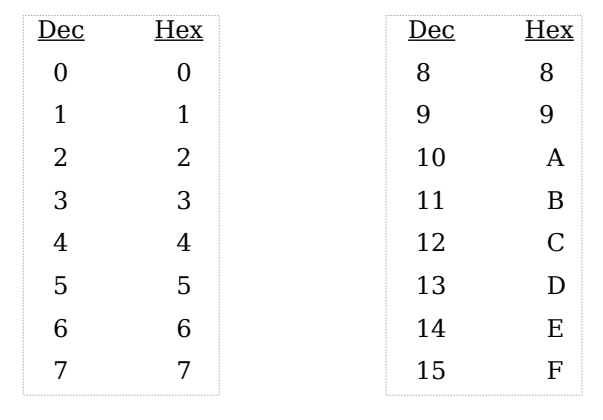
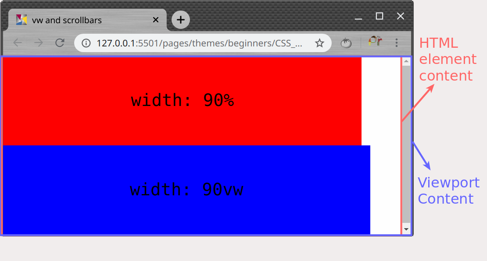

Стойности за цветове и мерни единици в CSS3
Created for
Created by

Стойности за цветове
Чрез предефинирани имена
Чрез предефинирани имена
- Имената могат да се записват чрез малки или големи букви (case-insensitive).
- Color Values @w3schools
- Color_keywords @MDN
#test{
background-color: purple;
}
Чрез предефинирани имена
Този начин за задаване на цветове се използва рядко, предимно за примери/тестване.
Чрез RGB - десетичен запис
- Стойностите могат да бъдат зададени като:
- Десетично число в интервала [0 - 255]
- Процент: от 0% до 100%
color: rgb(255, 0, 0); /*червено*/
color: rgb(100%, 0%, 0%); /*червено*/
color: rgb(0, 0, 255); /*синьо*/
color: rgb(0%, 0%, 100%); /*синьо*/
color: rgb(255, 255, 0); /*жълто*/
color: rgb(100%, 100%, 0%);/*жълто*/
color: rgb(0, 0, 0); /*черно*/
color: rgb(255,255,255); /*бяло*/
color: rgb(127,127,127); /*сиво*/
Чрез RGB - шестнадесетичен запис (Hex triplet)
Използват се шестнадесетични цифри (hexadecimal notation)
{kind=link}
Чрез RGB - шестнадесетичен запис (Hex triplet)
- За всеки цвят задаваме шестнадесетично число в диапазона: 00 - FF
- Общо 6 шестнадесетични цифри
- С две допълнителни цифри в края може да се зададе алфа нивото (виж alphaChanelByHextriplets)
#test{
background-color: #FF0000; /*червено*/
color: #0000FF; /*синьо*/
}
RGB - съкратен шестнадесетичен запис
- За всеки цвят задаваме шестнадесетично число в диапазона: 0 - F
- Общо 3 шестнадесетични цифри
- С допълнителна, 4-та цифра, може да се зададе алфа нивото (виж alphaChanelByHextriplets).
#test{
background-color: #F00; /*червено*/
color: #00F; /*синьо*/
}
Hex triplet - пример
Чрез HSL: Hue, Saturation, Lightness
The color wheel

Чрез HSL: Hue, Saturation, Lightness
- hue – стойност в интервала [0-360] градуса, където:
- 0 – червен цвят
- 120 – зелен цвят
- 240 – син цвят
- saturation – насищане на цвета: от 0% до 100%
- lightness - осветеност: 0% - черно, 100% - бяло;
#test{
background-color: hsl(0, 100%, 50% ); /*червено*/
color: hsl(240, 100%, 50% ); /*синьо*/
}
Задаване на прозрачност за цвят (alpha channel) чрез RGBA
- alphaValue може да бъде в интервала [0 - 1] или в [0% - 100%]
- alphaValue = 0 (или 0%): пълна прозрачност
- alphaValue = 1 (или 100%): пълна непрозрачност
#test{
background-color: rgba(255, 0, 0, 0.5); /* полупрозрачно червено*/
background-color: rgba(255, 0, 0, 0); /* напълно прозрачно "червено"*/
}
Задаване на прозрачност за цвят (alpha channel) чрез HSLA
- alphaValue може да бъде в интервала [0 - 1] или в [0% - 100%]
- alphaValue = 0 (или 0%): пълна прозрачност
- alphaValue = 1 (или 100%): пълна непрозрачност
#test{
/* полупрозрачно червено*/
background-color: hsla(0, 100%, 50%, 0.5 );
/* напълно прозрачно "червено"*/
background-color: hsla(0, 100%, 50%, 0 );
}
Задаване на прозрачност за цвят (alpha channel) чрез Hex Triplets
- alphaValue може да бъде в интервала [00 - FF] или в [0 - F]
- alphaValue = 00 (или 0): пълна прозрачност
- alphaValue = FF (или F): пълна непрозрачност
#test{
/* полупрозрачно червено - чрез 8 цифрен hex запис*/
background-color: #FF000080;
/* напълно прозрачно "червено" - чрез 4 цифрен hex запис*/
background-color: #FF00;
}
alphaChanelValues - пример
Задаване на прозрачност за елемент (opacity property)
Прозрачността за цвят, не бива да се бърка със свойството opacity, което задава прозрачност за целия елемент!
Единици за дължина (length units)
- Чрез тях задаваме стойности за width, height, margin, padding, font-size и пр.
- Например:
- Записват се непосредствено след самото число, без спейс.
- Ако стойността е 0 можем да не уточняваме мерната единица.
- Реалните числа се записват с точка, не със запетая. Например:
1.5px - Нулата в цялата част на числото може да се пропусне. Например:
0.5pxможе да се запише като.5px
width: 100px;
height: 80%;
margin: 0;
font-size: 2em;
Абсолютни:
- px : пиксела (1px = 1/96 от инча)
- Използват се при екранна медия (screen media)
- pt : точки (1pt = 1/72 от инча)
- Използват се, когато медията е принтер.
- cm : сантиметъра
- mm : милиметра
- in : инча
Когато желаете страницата да изглежда еднакво добре на различни устройства (responsive design), не бихте желали да използвате абсолютни мерни единици
Абсолютни мерни единици, и то pt, бихте желали да използвате, когато подготвяте документ за принтиране.
Релативни:
- em : изчислява се спрямо размера на шрифта на текущия елемент. Не забравяйте, че font-size е наследимо свойство!.
- rem : изчислява се спрямо спрямо размера на шрифта на root елемента (елемента html за HTML езика).
- % : Зависи от конкретното свойство! За повечето свойства се изчислява като % от стойността на даденото свойство дефинирана в родителския елемент.
- Пример за изключение:
padding-top
Релативни (спрямо viewport)
- vw : 1% от широчината на изгледа (viewport width)
- vh : 1% от височината на изгледа (viewport height)
- vmin: : 1% от дължината на по-малката страна.
- vmax: : 1% от дължината на по-голямата страна.
Viewport-a е онази част от прозореца на браузера, в която се изобразява страницата. Вертикалният и хоризонталеният скрол на странницата се включват в рзмерите на viewport-a.
Viewport content vs HTML element content
{kind=link}
Разлика между % и viewport unit, когато има скролбар
Browser compatability
Стойностите rem, vw, vh, vmin, vmax са въведени от CSS3 и не биха работили под по-стари браузери.
Полезни статии
These slides are based on
customised version of
framework